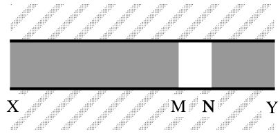
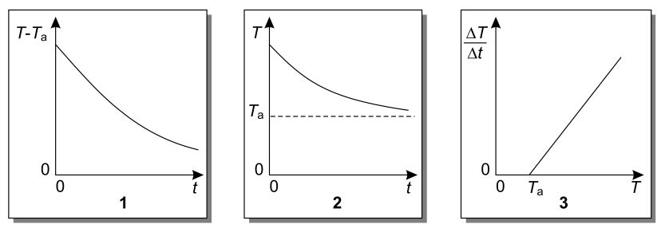
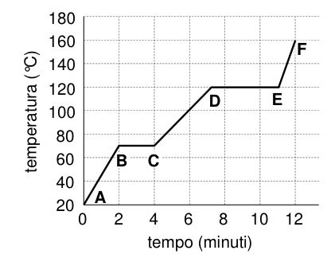
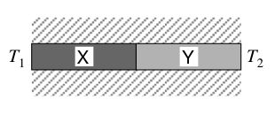
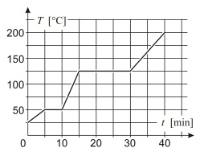
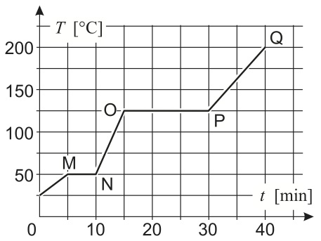

Test da Olimpiadi della Fisica
Esercizi sul calore
JQuiz realizzato con HotPotatoes
-
Il conduttore termico XY mostrato in figura è isolato termicamente lungo la sua superficie laterale e gli estremi X e Y sono mantenuti a temperature differenti; al suo interno il conduttore è interrotto da uno strato MN di un materiale diverso.

In condizioni stazionarie, la differenza di temperatura tra gli estremi dello strato MN non dipende . . .
1 - . . . dalla differenza di temperatura tra gli estremi XY del conduttore.
2 - . . . dallo spessore dello strato MN.
3 - . . . dalla posizione di MN lungo XY.
Quali delle precedenti affermazioni sono corrette?- Tutte e tre.
- Sia la 1 che la 2.
- Sia la 2 che la 3.
- Soltanto la 1.
- Soltanto la 3.
-
Una massa di 5 kg di acqua alla temperatura di 10°C viene aggiunta ad una massa di 10 kg di acqua alla temperatura di 40°C.
Trascurando la capacità termica del recipiente e le perdite di calore, la temperatura di equilibrio sarà prossima a . . .- 20°C
- 25°C
- 30°C
- 33°C
- 35°C
-
Il calore specifico dell'acqua è 4180 J kg-1K-1.
Per aumentare da 20°C a 100°C la temperatura di 500 g di acqua è necessario fornire una quantità di energiaE uguale a- 167 J
- 334 J
- 16.7 kJ
- 167 kJ
- 334 kJ
-
Una parete di mattoni è lunga 5 m, alta 3 m e spessa 0.3 m. Il coefficiente di conducibilità termica del mattone vale 0.6 W m-1 K-1.
Quando la temperatura della parete interna è di 20°C e la temperatura esterna di 0°C, quanto vale la potenza termica che attraversa la parete?- 25 W
- 60 W
- 125 W
- 600 W
- 1 250 W
-
Per preparare un tè, si riscaldano 200 g d'acqua portandoli da 20°C a 80°C.
Per riscaldare l'acqua del tè l'energia che occorre vale circa- 25 kJ
- 50 kJ
- 75 kJ
- 100 kJ
- 125 kJ
-
Un forno solare usato per scaldare acqua è costituito da uno specchio concavo di area 0.40 m2. La potenza radiante per unità di superficie, che arriva dal Sole sullo specchio, è
P = 103 W m-2.
La migliore stima del minimo tempo necessario per riscaldare nel forno 1 kg di acqua da 20°C a 50°C è- 0.8 min
- 5 min
- 20 min
- 50 min
- 320 min
-
Un corpo si sta raffreddando in un ambiente ventilato alla temperatura costante
T a.
Quali dei seguenti grafici rispettano la relazione tra la sua temperaturaT e il tempot ?
- Tutti e tre
- Solo lo 1 e il 2
- Solo il 2 e il 3
- Solo lo 1
- Solo il 3
-
Il calore specifico di un certo metallo è
c a/9 e la sua densità è 6ρa dovec a e ρa indicano, rispettivamente, il calore specifico e la densità dell'acqua. Volumi uguali di acqua e del metallo vengono riscaldati in modo che le loro temperature aumentino della stessa quantità e si osserva che l'energia che si è dovuto fornire al metallo èk volte quella trasferita all'acqua.
Quanto valek ?- 1/3
- 2/3
- 3/2
- 4
- 54
-
Un recipiente di polistirolo con coperchio contiene 0.30 kg di acqua a 100°C.
Se vengono versati nel recipiente 0.10 kg di acqua a 20°C, la temperatura finale sarà- 20°C
- 40°C
- 60°C
- 80°C
- 100°C
-
Il grafico rappresenta la temperatura di un campione di 2 kg di una sostanza in funzione del tempo, quando viene assorbito del calore a un tasso costante di 15 kJ/minuto.

Quanto vale il calore specifico della sostanza nella sua fase solida, espresso in kJ kg-1 K-1?- 0.2
- 0.3
- 0.4
- 0.5
- 0.6
-
Una barra metallica a sezione costante è costituita da due pezzi di materiale diverso: la conducibilità termica del materiale X è doppia rispetto a quella del materiale Y.
I due pezzi hanno uguale lunghezzaL e sono mantenuti in perfetto contatto termico tra loro mentre l'intera barra è isolata termicamente dall'ambiente. Le due estremità della barra sono mantenute a temperature costantiT 1 eT 2.
Quale dei grafici seguenti rappresenta meglio l'andamento della temperatura nei diversi punti della barra? -
Un bollitore d'alluminio contiene 0.50 kg d'acqua a 20°C. Il bollitore viene scaldato finché tutta l'acqua si trasforma in vapore a 100°C.
Quanto calore è necessario per far evaporare completamente l'acqua dopo che ha raggiunto il punto di ebollizione a 100°C?- 1.67 x 105 J
- 3.35 x 105 J
- 1.13 x 106 J
- 1.84 x 106 J
- 2.26 x 106 J
-
Un recipiente rigido, di volume pari a 0.008 m3, contiene gas perfetto monoatomico.
Se viene fornita al sistema una quantità di calore pari a 40 J, di quanto aumenterà la pressione del gas?- 5 Pa
- 320 Pa
- 1 600 Pa
- 3 333 Pa
- 5 000 Pa
-
Durante il processo di fusione del piombo, c'è un cambiamento apprezzabile. . .
- . . . della temperatura.
- . . . del calore di fusione.
- . . . del valore medio dell'energia cinetica delle molecole.
- . . . del valore medio dell'energia potenziale delle molecole.
- . . . della massa.
-
Un pezzo di ghiaccio di 100 g a 0°C viene messo in un recipiente contenente 100 g di acqua a 100°C.
Quale dei grafici seguenti rappresenta meglio l'andamento della temperatura dei due componenti della miscela in funzione del tempo? -
Quando una studentessa beve dell'acqua fredda, il suo corpo scalda l'acqua fino al raggiungimento dell'equilibrio termico.
Se la studentessa, nell'arco di una giornata, beve circa un litro e mezzo d'acqua a 8.0°C, quanta energia - sotto forma di calore - deve fornire approssimativamente il suo corpo all'acqua?(NOTA: si consideri la temperatura interna della studentessa pari a 37°C) - 44 kJ
- 180 kJ
- 190 kJ
- 230 kJ
- 470 kJ
-
Una sbarra metallica ha lunghezza
L e sezione trasversale di areaA . Un'estremità della sbarra è tenuta a temperatura costantet 1, l'altra a temperatura costantet 2. Siat 1 >t 2.
Quali, tra le seguenti affermazioni riguardanti il flusso termico (quantità di calore trasportato per unità di tempo) attraverso la sbarra, sono corrette?
1 - Il flusso termico è proporzionale a 1/(t 1-t 2).
2 - Il flusso termico è proporzionale adA .
3 - Il flusso termico è proporzionale aL .- Solo la 2.
- Solo la 3.
- Solo la 1 e la 2.
- Solo la 1 e la 3.
- Solo la 2 e la 3.
-
Un bollitore di alluminio di massa
m = 0.80 kg contiene 0.50 kg d'acqua a 20°C. Il bollitore viene riscaldato finché l'acqua bolle a 100°C e il bollitore può ritenersi in equilibrio termico con l'acqua.
Qual è - approssimativamente - la quantità netta di calore assorbita dal bollitore di alluminio da quando l'acqua è a 20°C a quando è a 100°C?NOTA: Il calore specifico dell'acqua è 4.19 x 103 J kg -1 K-1, quello dell'alluminio è 904 J kg -1 K-1. - 1.30 MJ
- 630 kJ
- 270 kJ
- 160 kJ
- 60 kJ
-
Un cubo di ghiaccio di massa pari a 60 g a 0°C viene posto in un recipiente di vetro contenente 250 g di acqua a 25°C. Si può considerare il sistema isolato termicamente.
Quale delle affermazioni seguenti descrive il sistema quando è stato raggiunto l'equilibrio?- Il ghiaccio è completamente fuso e la temperatura dell'acqua è superiore a 0°C
- Il ghiaccio è completamente fuso e la temperatura dell'acqua è 0°C
- Resta presente del ghiaccio e la temperatura dell'acqua è superiore a 0°C
- Resta presente del ghiaccio e la temperatura dell'acqua è 0°C
- Non si può dire nulla sullo stato di equilibrio, se non si conosce la capacità termica del recipiente.
-
Cinque oggetti sono fatti, rispettivamente di piombo, argento, tungsteno, rame e cromo; hanno tutti massa di 10 g e sono alla temperatura di 20°C.
Se ad ogni oggetto vengono forniti 100 J di calore, quale di essi alla fine avrà la temperatura più bassa?- Il piombo, dato che presenta il calore di fusione più basso.
- L'argento, dato che ha la conducibilità termica più alta.
- Il tungsteno, dato che ha il calore di vaporizzazione più alto.
- Il rame, dato che ha il calore specifico più alto.
- Il cromo, dato che ha il calore specifico più basso.
-
Un riscaldatore elettrico a immersione viene usato per aumentare di 0.1 K in 100 s la temperatura di 1 kg di un liquido avente un calore specifico di 1000 J kg-1 K-1.
Nell'ipotesi che le perdite di calore siano trascurabili, qual è approssimativamente la potenza del riscaldatore?- 0.1 W
- 1 W
- 10 W
- 100 W
- 1000 W
-
Quanto calore è necessario, approssimativamente, per vaporizzare 2.0 g di acqua alla temperatura di ebollizione e alla pressione atmoferica?
Il calore di vaporizzazione dell'acqua (a 100°C) è λv = 2.26 x 106 J kg-1 - 8.4 J
- 500 J
- 670 J
- 840 J
- 4500 J
-
Un sistema costituito da una miscela di acqua e ghiaccio viene riscaldato.
Quale dei grafici seguenti rappresenta correttamente la relazione tra la temperatura del sistema e il calore fornito? -
In un recipiente aperto all'aria è in ebollizione 1 kg di acqua. Vi si inserisce un campione di 0.5 kg di piombo a 250°C.
Per effetto di questo inserimento, come cambiano le temperature delle due sostanze?- La temperatura dell'acqua diminuisce e quella del piombo rimane invariata.
- La temperatura dell'acqua aumenta e quella del piombo rimane invariata.
- La temperatura dell'acqua rimane invariata e quella del piombo diminuisce.
- La temperatura dell'acqua aumenta e quella del piombo diminuisce.
- La temperatura dell'acqua rimane invariata e quella del piombo aumenta.
-
In quale modo un aumento della pressione al di sopra di quella atmosferica modifica la temperatura di ebollizione dell'acqua e quella di fusione del ghiaccio?
- La temperatura di ebollizione aumenta e quella di fusione aumenta.
- La temperatura di ebollizione aumenta e quella di fusione diminuisce.
- La temperatura di ebollizione diminuisce e quella di fusione aumenta.
- La temperatura di ebollizione diminuisce e quella di fusione diminuisce.
- La temperatura di ebollizione diminuisce e quella di fusione rimane invariata.
-
1.5 L d'acqua si trovano alla pressione atmosferica e alla temperatura di 20°C. Successivamente l'acqua viene scaldata da un bollitore che le fornisce 2.2 kJ di energia al secondo. Si supponga di poter trascurare il calore disperso e l'evaporazione dell'acqua che avviene al di sotto del punto di ebollizione.
Dopo 20 minuti ...- ... la temperatura dell'acqua è arrivata a 22.4°C.
- ... la temperatura dell'acqua è arrivata a 84.3°C.
- ... l'acqua sta bollendo e rimangono 550 cm3 di liquido.
- ... l'acqua sta bollendo e rimangono 50 cm3 di liquido.
- ... tutta l'acqua è passata allo stato di vapore.
-
La porta di un forno industriale ha un coefficiente di conducibilità termica
K = 46 W m-1 K-1 ed uno spessore di 3 mm.
La porta viene sostituita da un'altra porta di conducibilità termicaK ' = 109 W m-1 K-1 e spessore 9 mm.
A parità di temperatura dell'ambiente esterno e del forno, la sostituzione ha moltiplicato la potenza termica dispersa attraverso la porta di un fattore. . .- . . . 0.15
- . . . 0.79
- . . . 1
- . . . 1.38
- . . . 1.84
-
Un campione solido viene riscaldato e si osserva che la sua temperatura aumenta, ma il solido non fonde.
Quale, tra le affermazioni seguenti, descrive meglio come variano l'energia cinetica media e l'energia potenziale media delle molecole del campione durante il riscaldamento?- L'energia potenziale diminuisce e l'energia cinetica aumenta.
- L'energia potenziale aumenta e l'energia cinetica rimane costante.
- L'energia potenziale rimane costante e l'energia cinetica diminuisce.
- L'energia potenziale rimane costante e l'energia cinetica aumenta.
- Sia l'energia potenziale che l'energia cinetica decrescono.
-
Si sottrae una quantità
Q = 14.5 MJ di energia termica a 5.0 kg di vapor acqueo inizialmente a 150°C che si trova in un recipiente chiuso. Si adotti come valore medio del calore specifico del vapor acqueo cV = 1.53 kJ kg-1 K-1.
Il risultato dell'operazione è:- Vapor acqueo.
- Miscuglio di vapor acqueo e acqua liquida.
- Acqua liquida.
- Miscuglio di acqua liquida e ghiaccio.
- Ghiaccio.
-
Un campione di una sostanza di massa 5.0 kg assorbe calore da una sorgente che ne fornisce in maniera costante nel tempo una quantità pari a 41.9 kJ ogni minuto. Il grafico rappresenta la temperatura del campione al trascorrere del tempo.

Il calore di vaporizzazione della sostanza è pari a- 12.6 kJ kg-1.
- 62.9 kJ kg-1.
- 126 kJ kg-1.
- 210 kJ kg-1.
- 629 kJ kg-1.
-
Un blocco di un certo materiale avente massa
M = 1.0 x 103 kg assorbe una quantitàQ = 2.4 x 103 kJ di calore mentre la sua temperatura varia da 710°C a 720°C.
Qual è il calore specifico del materiale di cui è fatto il blocco?- 4.2 x 10-8 kJ kg-1 K-1
- 4.2 x 10-7 kJ kg-1 K-1
- 0.24 kJ kg-1 K-1
- 2.4 x 10-8 kJ kg-1 K-1
- 2.4 x 105 kJ kg-1 K-1
-
Una persona è all'ombra in un'amaca in un giorno estivo in cui la temperatura è di 37°C, uguale a quella del suo corpo. In queste condizioni, il processo migliore grazie al quale il suo corpo smaltisce il calore prodotto dal suo metabolismo (ad un tasso di 130 W) è la traspirazione. Il calore di vaporizzazione dell'acqua alla temperatura di 37°C è L = 2430 kJ kg-1.
Il volume di sudore che evapora in un'ora è circa uguale a- 50 cm3
- 100 cm3
- 200 cm3
- 500 cm3
- 1000 cm3
-
Il grafico illustra l'andamento della temperatura di un corpo omogeneo, inizialmente allo stato solido, che viene riscaldato, in funzione del tempo di riscaldamento. La massa del corpo è 5 kg e il calore che assorbe ogni minuto - ad un tasso costante - è di 41.9 kJ.

Qual è la quantità di calore assorbita da 1 kg del corpo tra l'istante in cui inizia la fusione e quello in cui termina l'ebollizione?- 105 kJ
- 210 kJ
- 419 kJ
- 1050 kJ
- 2560 kJ
Quali, tra le grandezze seguenti, vengono espresse con le stesse unità di misura?- Energia e potenza.
- Lavoro e potenza.
- Impulso e potenza.
- Calore ed energia meccanica.
- Quantità di moto e lavoro.
In un calorimetro di capacità termica 80 J K-1 a 20°C, contenente 200 cm3 d'acqua alla stessa temperatura, si versano 300 g d'acqua a 70°C.
Se non ci sono dispersioni di calore, qual è la temperatura raggiunta all'equilibrio?- 31.6°C
- 48.9°C
- 58.9°C
- 61.3°C
- 65.2°C